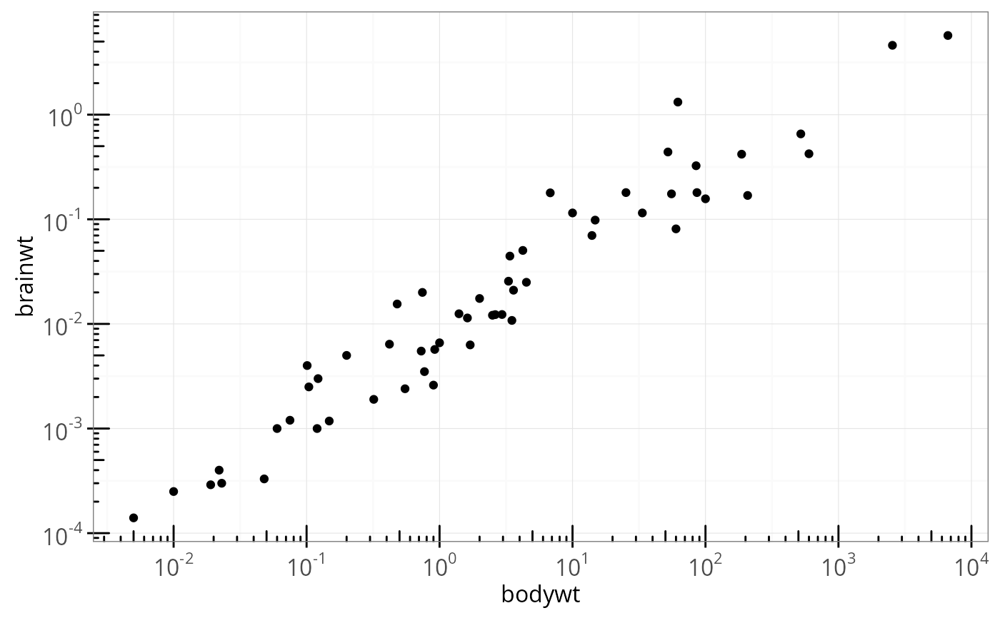
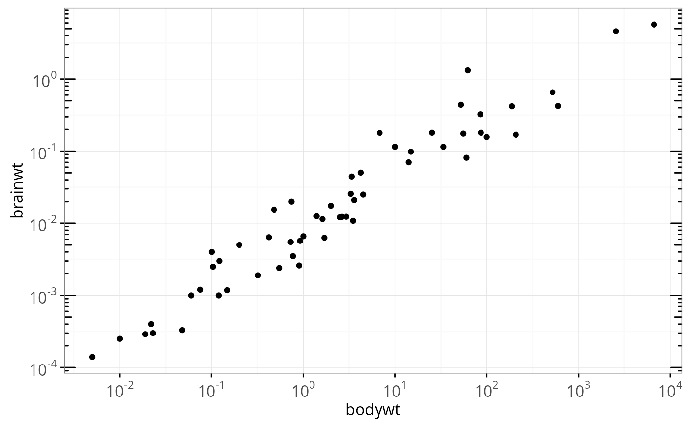
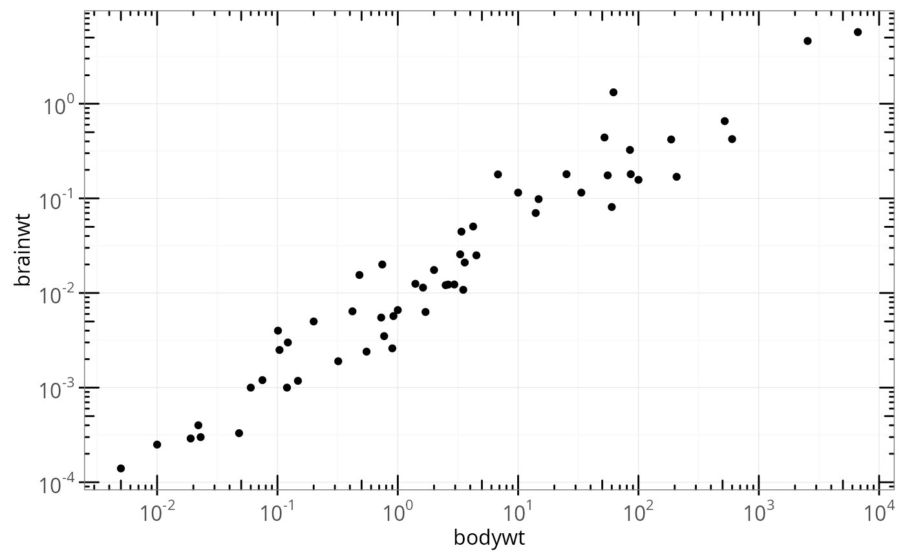
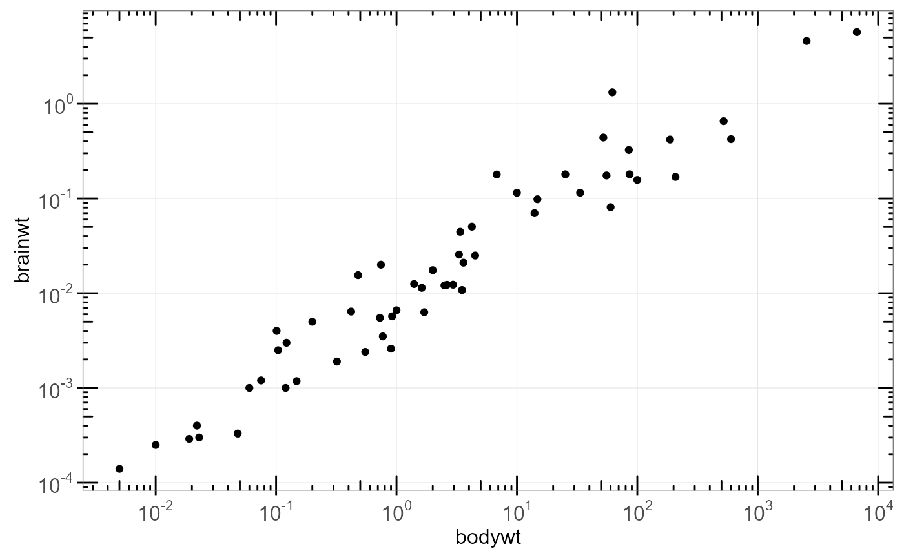
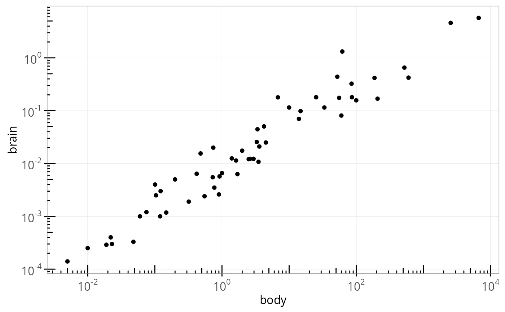
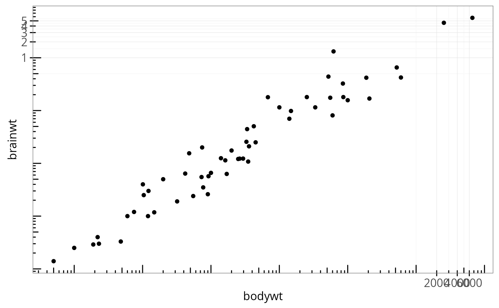
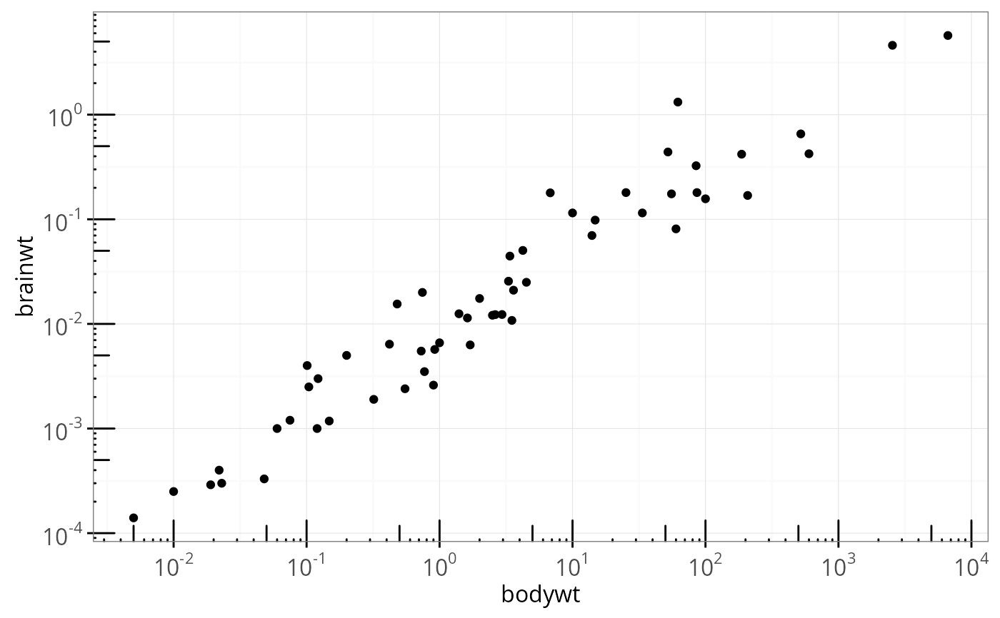

This annotation adds log tick marks with diminishing spacing. These tick marks probably make sense only for base 10.
Arguments
- base
the base of the log (default 10)
- sides
a string that controls which sides of the plot the log ticks appear on. It can be set to a string containing any of
"trbl", for top, right, bottom, and left.- scaled
is the data already log-scaled? This should be
TRUE(default) when the data is already transformed withlog10()or when usingscale_y_log10. It should beFALSEwhen usingcoord_trans(y = "log10").- short
a
unitobject specifying the length of the short tick marks- mid
a
unitobject specifying the length of the middle tick marks. In base 10, these are the "5" ticks.- long
a
unitobject specifying the length of the long tick marks. In base 10, these are the "1" (or "10") ticks.- colour
Colour of the tick marks.
- size
Thickness of tick marks, in mm.
- linetype
Linetype of tick marks (
solid,dashed, etc.)- alpha
The transparency of the tick marks.
- color
An alias for
colour.- ...
Other parameters passed on to the layer
See also
scale_y_continuous, scale_y_log10 for log scale
transformations.
coord_trans for log coordinate transformations.
Examples
# Make a log-log plot (without log ticks)
a <- ggplot(msleep, aes(bodywt, brainwt)) +
geom_point(na.rm = TRUE) +
scale_x_log10(
breaks = scales::trans_breaks("log10", function(x) 10^x),
labels = scales::trans_format("log10", scales::math_format(10^.x))
) +
scale_y_log10(
breaks = scales::trans_breaks("log10", function(x) 10^x),
labels = scales::trans_format("log10", scales::math_format(10^.x))
) +
theme_bw()
a + annotation_logticks() # Default: log ticks on bottom and left

a + annotation_logticks(sides = "lr") # Log ticks for y, on left and right

a + annotation_logticks(sides = "trbl") # All four sides

# Hide the minor grid lines because they don't align with the ticks
a + annotation_logticks(sides = "trbl") + theme(panel.grid.minor = element_blank())

# Another way to get the same results as 'a' above: log-transform the data before
# plotting it. Also hide the minor grid lines.
b <- ggplot(msleep, aes(log10(bodywt), log10(brainwt))) +
geom_point(na.rm = TRUE) +
scale_x_continuous(name = "body", labels = scales::math_format(10^.x)) +
scale_y_continuous(name = "brain", labels = scales::math_format(10^.x)) +
theme_bw() + theme(panel.grid.minor = element_blank())
b + annotation_logticks()

# Using a coordinate transform requires scaled = FALSE
t <- ggplot(msleep, aes(bodywt, brainwt)) +
geom_point() +
coord_trans(x = "log10", y = "log10") +
theme_bw()
t + annotation_logticks(scaled = FALSE)
#> Warning: Removed 27 rows containing missing values (geom_point).

# Change the length of the ticks
a + annotation_logticks(
short = unit(.5,"mm"),
mid = unit(3,"mm"),
long = unit(4,"mm")
)
